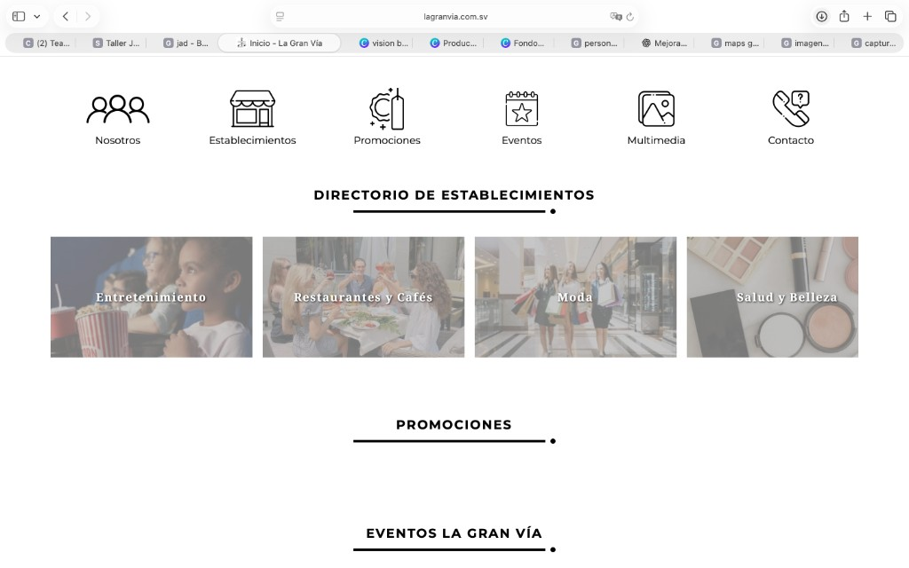
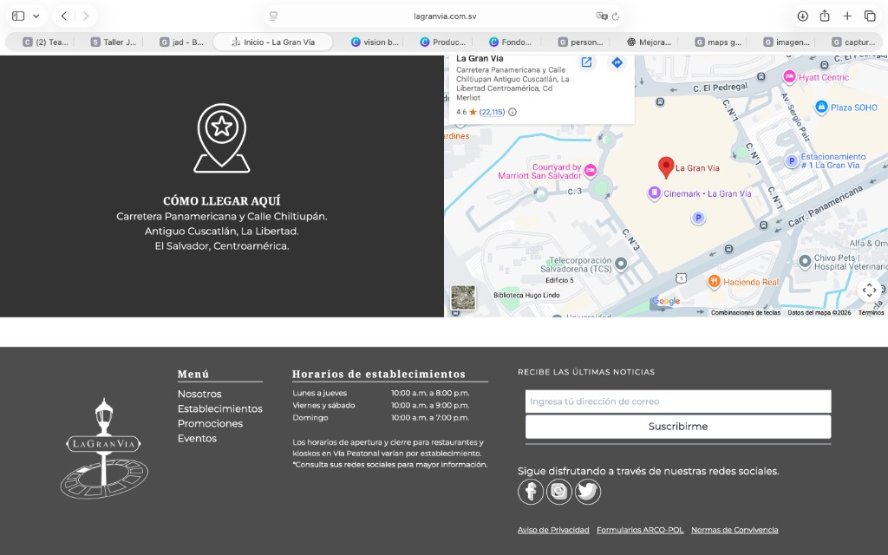
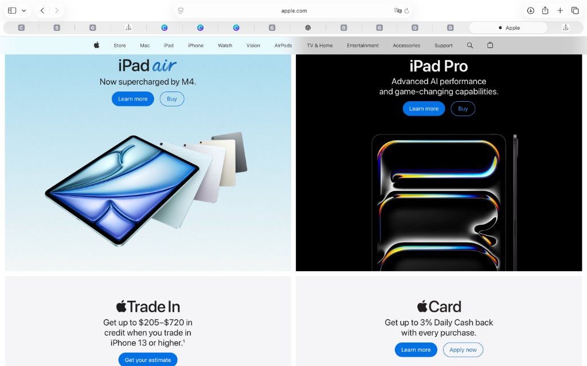

1. Sitio y diagnóstico
URL: https://www.lagranvia.com.sv/
Aspectos a mejorar en la home actual:
- El logo está en el video de inicio, pero el menú de iconos no repite el nombre: si no se ve el video, no se entiende de quién es el sitio.
- En el código, Promociones y Eventos son bloques vacíos (el contenedor no tiene tarjetas).
- El directorio es un carril horizontal de muchas categorías; en pantalla ancha se pierde el mensaje de marca.
Del Inspeccionar (HTML de la home): fuentes
Montserrat y Noto Serif; títulos con
línea negra y punto (border-black); pie
bg-gray-700 / bg-gray-600; el azul aparece
solo en hover (hover:text-blue-600), no como color de
marca. Eslogan del video: “Ambiente · Estilo · Diversión”.
Home (arriba):

Home (pie):

Inspiración (apple.com):

2. Prompt genérico (texto exacto)
Mejora esta página de inicio.
Resultado: reto-ia/generico
3. Prompt elaborado (texto exacto)
Rediseña la página de inicio de La Gran Vía, centro comercial (lifestyle center) en El Salvador. URL del sitio actual: https://www.lagranvia.com.sv/ Contexto del sitio actual (según capturas): - Fondo blanco, iconos negros y mucho espacio vacío. - Menú superior con seis iconos: Nosotros, Establecimientos, Promociones, Eventos, Multimedia, Contacto. No hay logo en el encabezado. - Sección “Directorio de establecimientos” con cuatro tarjetas fotográficas iguales: Entretenimiento, Restaurantes y Cafés, Moda, Salud y Belleza. Texto blanco en serif sobre la foto. - Títulos de sección en mayúsculas con una línea gruesa y un punto. - Más abajo, “Promociones” y “Eventos La Gran Vía” se ven como títulos sin contenido. - El pie es gris oscuro: mapa “Cómo llegar aquí”, dirección en Carretera Panamericana y Calle Chiltiupán, Antiguo Cuscatlán, La Libertad; logo de farol; menú; horarios (lun-jue 10-8, vie-sáb 10-9, dom 10-7); newsletter y redes. Problemas a resolver: 1) Que la marca se lea al inicio (nombre o logo en la barra). 2) Que Promociones y Eventos no queden como títulos vacíos. 3) Que haya un héroe claro (qué es el lugar) y no solo una grilla de cuatro tarjetas iguales. Identidad: lifestyle center desde 2005, tono elegante y sobrio, blanco/negro, fotos a color. No uses un look de “plantilla de ofertas naranjas”. Inspiración visual: apple.com. Quiero bloques grandes tipo mosaico (dos columnas), mucho aire, titulares centrados, botones tipo píldora, un bloque claro y otro oscuro, fotos de producto/lugar abajo del texto. No copies productos de Apple; copia la jerarquía y el espacio. Contenido que debe permanecer: directorio (esas cuatro categorías), cómo llegar, horarios, enlaces de navegación reales del sitio. Entrega HTML y una hoja CSS externa. Usa clases e ids. Español.
Resultado: reto-ia/elaborado
5. Tabla de correspondencia (resultado elaborado)
| Ya visto en el curso | Contenido nuevo y para qué sirve |
|---|---|
| Estructura HTML5: header, nav, section, footer, h1–h3, p, a, img. Título, charset, viewport. |
display: flex y flex-wrap en
.rejilla y .llegar: alinear mosaicos
y el bloque de mapa/horarios en filas, sin tablas de layout.
|
CSS externo con link rel="stylesheet". Selectores
de etiqueta, clase (.boton) e id
(#barra, #menu,
#promo-texto).
|
width: calc(50% - 8px) y
box-sizing: border-box: dos columnas precisas con
espacio entre tarjetas.
|
| Propiedades de texto y color: color, font-family, font-size, font-weight, text-align, text-transform, text-decoration, line-height, letter-spacing. |
border-radius en botones: esquinas tipo píldora,
como en Apple.
|
| Fondo, márgenes, padding, ancho de imágenes, hover en enlaces. |
gap en flex: separación uniforme entre mosaicos
sin depender solo de margin.
|
| Comentarios y organización de reglas en un .css aparte. |
display: table en el título de sección: la línea
inferior solo cubre el texto, no toda la página.
|